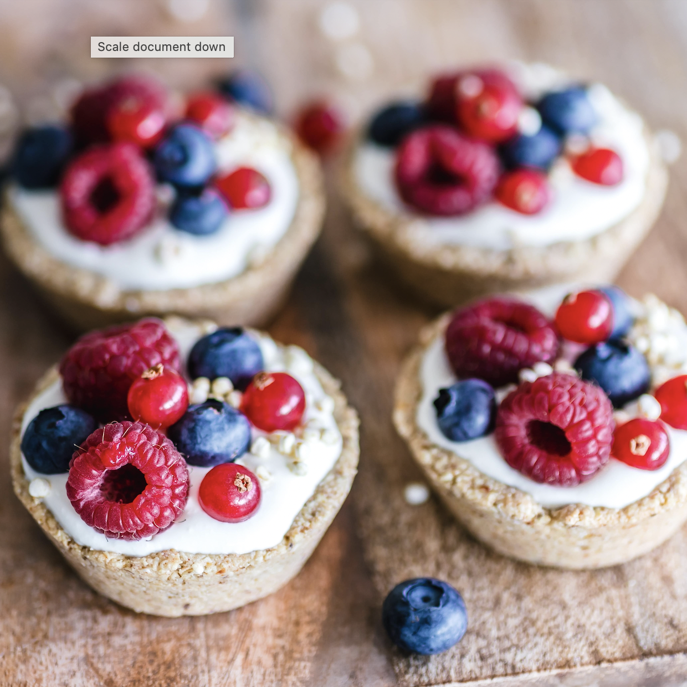

Desserts

Frosted Cinnamon Rolls
Classic and decadent, cinnamon rolls are one of my all-time favorite desserts to make and eat.
Triple Berry Mini Cheesecakes
Vegan cheesecake with a sweet fresh berry topping. Though more time consuming, this recipe is worth the time.

Lemon Strawberry Cupcakes
Simple and quick, these cupcakes can brighten up any festivity. By using different extracts, you can create different cupcake flavors easily.

Every Flavor Macaroons
Macaroons of every flavor. Delicate and fluffy, macaroons are a classic and elegant dessert perfect for any occasion.